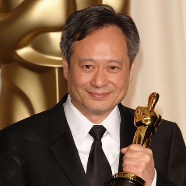

Influential Figures in Film Production (China, Hong Kong, and Malaysia)
| Name | Contribution | Link |
|---|---|---|
 Ang Lee |
Award-winning director and producer (Life of Pi, Crouching Tiger Hidden Dragon) | Biography |
|
Wong Kar Wai |
Famous director and producer (In the Mood for Love) | Profile |
|
Chiu Keng Guan |
Malaysian film director and producer (Ola Bola, The Journey) | Wikipedia Profile |
 Tan Chui Mui |
Independent Malaysian filmmaker and producer (Love Conquers All) | Love Conquers All Info |